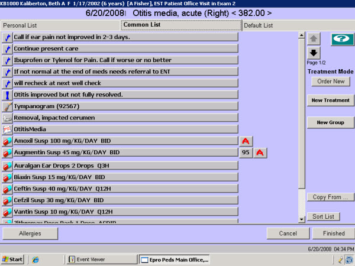

|
Description
The Treatment List screens are used to order the treatment plan for a specific assessment. Ordering treatments from the Treatment List automatically associates that treatment with the assessment. This is especially important in the case of billable treatments.
There are three tabs on the Treatment List screen, each with its own list:
- Personal - this list is only viewable and usable by the current user
- Common - this list is available to all users
- Default - this list is the same for all assessments across the practice
The list of treatments can be copied from one tab to another for the same assessment or from the Personal/Common tabs for a different assessment.
Using Treatment Groups
Within each list (Personal, Common, Default) the user or practice can set up treatment groups. Treatment Groups (previously called Composite Treatment Lists) display as an expandable tree. They allow similar treatments to be grouped together, taking up less space on the treatment list screen. Some uses of treatment groups:
- Similar types of prescription medications (beta blockers, antibiotics)
- A commonly used treatment plan that has several different treatments
- Vaccines typically ordered at the same well child visit
The provider can select one or more items individually from a treatment group, after expanding the group or can select all items in the group with a single click.
How to Access This Screen
Access this screen by:
- Selecting the small icon to the left of an existing assessment from the Patient Chart screen
- Selecting New Sick or New Other DX, then selecting an assessment
Screen Example

 NOTE: The red 'A' is a graphical indication that the specific treatment is contraindicated for this patient, probably because of an allergy. Select the 'A' button to view the reason that this treatment was flagged. NOTE: The red 'A' is a graphical indication that the specific treatment is contraindicated for this patient, probably because of an allergy. Select the 'A' button to view the reason that this treatment was flagged.
Want to Learn More?
Related Solutions
How to: Copy a Treatment
How to: Create a Treatment Group
How to: Update a Treatment List
How to: Create a Personal Treatment List
How to: Order Assessments and Treatments
|